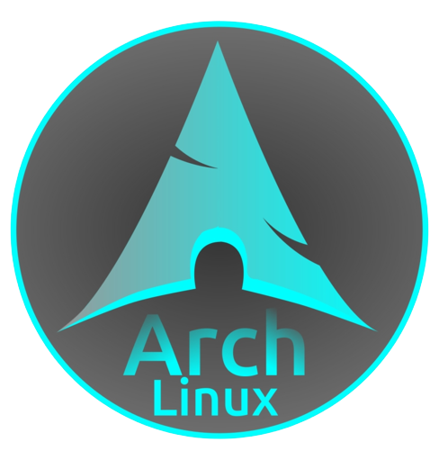

Skills
Linux
Arch
Arch is my daily OS. So why am i not using Windows, like everybody else.
Well first of all i find windows has just transformed into a bloated mess. So a friend(Luis
) told
me, how little ram his linux laptop was using in idle. I noticed this was 1/8th of what my
windows PC was using, so i knew that something had to be done. I istalled debian with xfce
and was supriesed by the control i hade. My Pc didnt take years to boot up and everything
was so clean. Of course the first few weeks were different, but know that i am used to it i
can confidently say, that i only use Windows to do GPU intesive things. Plus Linux just
improves my workflow and boosts my productivity, since everthing is so quickly accesible
trough the terminal. A few month after my friend introduced me to linux, i saw that he was
using GNOME and i found that destop enviorment very very clean. So i tried to install it but
noticed, that a lot of applications came with it and that was just to much. It also compromised
the reason why i switched to linux. I wanted to get rid of the bloat. But after some more discuission
and research with my friend
we found out that while installing arch, you could chosse to not install
all of these applications. This was great, puls it was a major breath of fresh air, escaping debians
reposotorys and using archs user repos. Since then i have been on Arch Linux.
